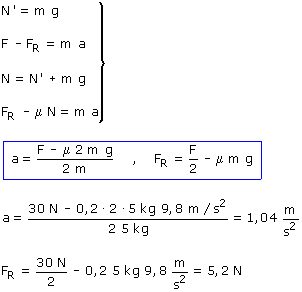

Sentido de la aceleración
 |
La única fuerza útil es la fuerza F
que se ejerce sobre el bloque 2 |
Estudio del movimiento:
|
|
|
Las fuerzas N12, N21 (Normales de contacto) tienen el mismo módulo: N' (Acción y reacción) Las fuerzas F12, F21 (Fuerza
de rozamiento) tienen el mismo modulo FR (Acción y
reacción). Este módulo es Ambos bloques van juntos luego tienen la misma aceleración: a |
|
|


Combinando las ecuaciones obtenidas resulta un sistema de incógnitas: FR, a

Para que los bloques vayan juntos la fuerza de rozamiento entre ellos tiene que ser de 5.2 N. Vamos a ver si este valor es posible:
El valor máximo de la fuerza de rozamiento es:

No hay fuerza de rozamiento suficiente para que los bloques vayan juntos... habrá que repetir el problema suponiendo que se mueven por separado